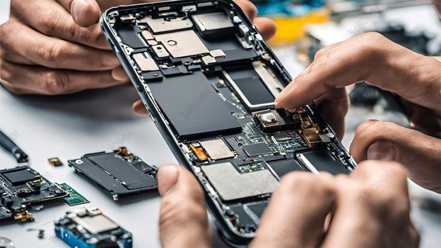
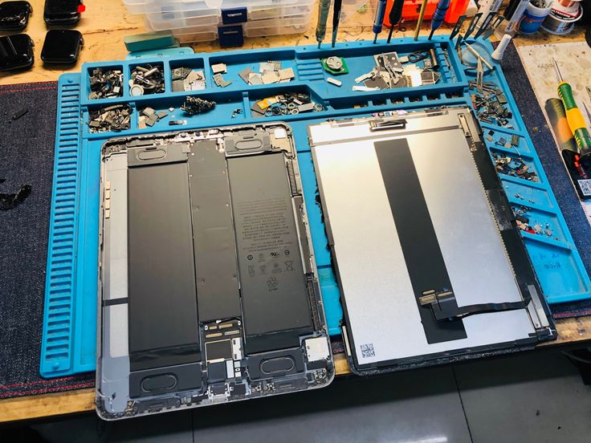

Smartphone Screen Repairs
Screen replacement and device restoration.
MOBILE
Explore some of our technology repair and support projects. Every job is focused on reliable solutions, quality workmanship and getting devices back to their best.

Screen replacement and device restoration.
MOBILE
Diagnostics, hardware upgrades and servicing.
COMPUTERS
Inspection, cleaning and troubleshooting.
CAMERA
Software support and performance checks.
SUPPORT
Fault detection and component testing.
DIAGNOSTICS
Reliable repairs and quality checks.
REPAIR